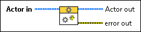

Actor:Pre Launch Init [Protected]
Owning Palette: Commonly Overridden Methods (Actor Framework)
Requires: Base Development System
(Filename: Actor Framework.lvlib:Actor.lvclass:Pre Launch Init.vi)
Defines behavior that occurs after the Launch Nested Actor method is invoked but before the actor's Actor Core method begins running.
By default, this method does nothing. A descendant class may override it to define behavior.
 | Caution Do not use the Pre Launch Init method to call the Launch Root Actor method or the Launch Nested Actor method. Doing so causes this method to hang. Only use the Launch Root Actor VI from outside all Actor Framework VIs, and use the Launch Nested Actor VI from the Actor Core method. |
